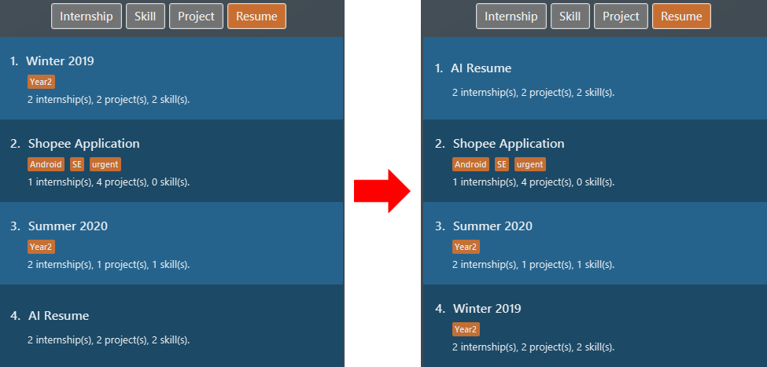
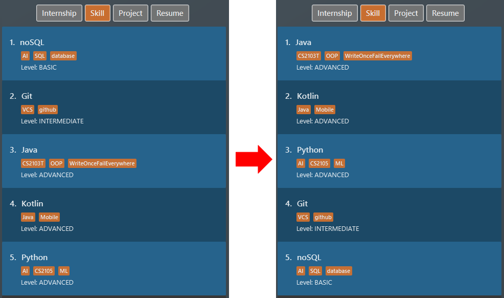

Overview
ResuMe is a desktop application to build and manage resumes. You can create resumes, add items to resumes, and generate them with a handful of commands. The majority of interactions are via the Command Line Inteface (CLI).
The project builds upon the code from Address Book Level 3 (AB3), a desktop Address Book application. ResuMe retains the characteristics of AB3 while also having its own uniqueness. It is truly remarkable.
This portfolio showcases my skills and contributions.
1. Summary of contributions
1.2. Enhancements implemented
-
Major enhancement:
-
Added the ability to undo/redo previous commands
-
What it does: allows the user to undo all previous commands one at a time. Preceding undo commands can be reverted using the redo command.
-
Justification: This feature improves the product significantly because a user tend to make mistakes with commands and the application can provide them a convenient way to rectify their mistakes.
-
Highlights: the feature provides a huge leap forward in term of quality of life for the user. It also shows improve cohesiveness for our application because the package of functionality feels complete and resembles an actual in-use product in the market. Many alternatives were looked at and I gained a lot of insights while searching for the most suitable implementation.
-
-
Planned data encryption and log-in functionality
-
Stashed changes that will be polished and released in a later version. They will allow user more security with ResuMe.
-
-
-
Minor enhancement:
-
Added sort functionality for items
-
What it does: allows the user to sort item lists based on different criteria like name or time.
-
Justification: This feature improves the product significantly because a user can quickly sort the items with a single command. Well organized list of items make it easier for user to utilise other commands, especially
redit. -
Highlights: This enhancement affects existing commands and commands to be added in future. It is challenging since the functionality is freshly new and no similar implementation exists in the original AddressBook Level 3.
-
-
1.3 Contributions to documentation:
-
Updated JavaDoc comments and provided justification where needed.
-
Updated the User Guide for the following sections:
-
1.2. Overview
-
4.7. Deleting an item:
delete -
4.8. Sorting an item list:
add -
4.12. Undoing a command:
undo -
4.13. Redoing a command:
redo -
4.20. Encrypting data files
[coming in v2.0]
-
-
Updated the Developer Guide for the following sections:
-
3.5. Storage component
-
4.4. Usage of
ObservableandObserver -
4.7. Undo/redo feature
-
4.8. [Proposed] Data Encryption
-
1.4 Contributions to team-based tasks:
2. Contributions to the User Guide
Given below are some of the sections I contributed to the User Guide. They showcase my ability to write documentation targeting end-users. |
Sorting an item list : sort
Sorts an item list in the ResuMe application.
Format: sort i/ TYPE order/ SORT_ORDER [reverse/ TRUE_OR_FALSE]
|
|
-
For the selected
TYPE, the list of items of that type will be sorted according toSORT_ORDER(see the note above for whatreverse/does). -
Below is the list of criteria by which different item types can be sorted:
| Item type | SORT_ORDER |
Criterion |
|---|---|---|
|
|
Name of |
|
|
Start date of |
|
|
Name of |
|
|
Date of |
|
|
Name of |
|
|
Level of proficiency of |
|
|
Name of |
|
|
Name of |
|
|
Deadline of |
Example:
-
We sort all
resumeitems by their name in ascending order withsort i/ res order/ name.Figure 1. List of resume items sorted by name in ascending order -
We sort all
skillitems in descending level of proficiency withsort i/ ski order/ level reverse/ true.Figure 2. List of skill items sorted by level in descending order -
We sort all
internshipby their start date in ascending order withsort i/ int order/ time reverse/ false, specifyingreverse/this time because we really like to type. Figure 3. List of all note items sorted by deadline in ascending order
Figure 3. List of all note items sorted by deadline in ascending order
Undoing a command: undo
Undoes the previous command and restores the state of the application to before that command is performed.
Format: undo
|
Example:
-
Suppose we hate Java and therefore want to delete it from the list of
skillitems using adelete 1 i/ skicommand. We also do alist i/ projto switch to viewing projects because that is how staging for an example works. Figure 4. List of all skill items after deleting "Java"
Figure 4. List of all skill items after deleting "Java" Figure 5. List of all project items
Figure 5. List of all project items -
But Stockholm’s syndrome kicks in and we decide that Java has its merits, so we revert our action with
undo. Voila, Java is back, and our list box now displaysskillitems. Figure 6. List of all skill items after undo
Figure 6. List of all skill items after undo
Redoing a command: redo
Redoes the most recent undone command and brings the application state to after the (re)execution of that command.
Format: redo
|
Example:
After the Java deletion incidence in the previous example section (for undo), we
decide that the merits of Java do not warrant the pain it wreaks so we want to redo our original decision to delete
Java. Once again, Java is removed from our life.

3. Contributions to the Developer Guide
Given below are some of the sections I contributed to the Developer Guide. They showcase my ability to write technical documentation and the technical depth of my contributions to the project. |
Storage component

API : Storage.java
The Storage component,
-
can save
UserPrefobjects in json format and read it back. -
can save the
ResumeBookdata in json format and read it back.
{ end of Implementation of Command section written by: Nguyen Chi Hai }
Usage of Observable and Observer
Reason for Implementation
ResuMe inherits a lot of implementations from AddressBook Level 3, one of which is the usage of ObservableList that
allows a list of item to be automatically updated in the UI every time a change is made to the underlying model.
When we added functionality for a user profile and sequentially a user profile window, the need for auto UI update surfaced.
We could not use the existing implementation since it is only for ObservableList. The initial rectification is to explicitly
call a UI update, but that requires the UI to directly reach out to the Model to get the user profile data. This seriously
breached many Software Engineering principles and we decided to amend it.
Design Considerations
-
Alternative 1: Use
ObservableandObserver-
Pros: Is way easier to implement and does not disrupt the existing code base much.
-
Cons: The two classes are deprecated in
Java 9due to various shortcomings.
-
-
Alternative 2: Use
java.beanspackage-
Pros: Is designed to replace
ObservableandObserverand is currently the industry standard. -
Cons: Is harder to implement and would require a lot of refactoring of the existing codes.
-
Conclusion
After deliberation we decided to go with the first alternative, due to time constraint and to avoid the potential
havoc that would arise from refactoring the code base. In addition, the limitations of Observable and Observer are
not likely to manifest considering the usage scenarios for our application (offline and not multi-threaded).
We would, however, make it a priority to change the implementation to Alternative 2, since we want to scale up our application and it is not recommendable to build it on top of something that is no longer supported.
Undo/Redo feature
Implementation
The undo/redo mechanism is facilitated by VersionedResumeBook.
It extends ResumeBook with an undo/redo history, stored internally as an ResumeBookStateList and currentStatePointer.
Additionally, it implements the following operations:
-
VersionedResumeBook#commit()— Saves the current resume book state in its history. -
VersionedResumeBook#undo()— Restores the previous resume book state from its history. -
VersionedResumeBook#redo()— Restores a previously undone resume book state from its history.
These operations are exposed in the Model interface as Model#commitResumeBook(), Model#undoResumeBook() and Model#redoResumeBook() respectively.
Given below is an example usage scenario and how the undo/redo mechanism behaves at each step.
Step 1. The user launches the application for the first time. The VersionedResumeBook will be initialized with the initial resume book state, and the currentStatePointer pointing to that single resume book state.
Do note that all resume books begin with its display type set to an empty string. Display type of a resume book determines which item
list will be selected for display (e.g. if the display type is "res" - an alias for resume, then the list of all resumes will be selected).

Step 2. The user executes delete 5 i/ res command to delete the 5th resume in the resume book. The delete command calls Model#commitResumeBook(), causing the modified state of the resume book after the delete 5 i/ res command executes to be saved in the resumeBookStateList, and the currentStatePointer is shifted to the newly inserted resume book state.
In addition, the display type of the current resume book will be set to resume.
Step 3. The user executes add i/ int n/ RESUME Internship … to add a new internship. The add command also calls Model#commitResumeBook(), causing another modified resume book state to be saved into the resumeBookStateList. This resume
book has its display type set to int - which is an alias for internship.

If a command fails its execution, it will not call Model#commitResumeBook(), so the resume book state will not be saved into the resumeBookStateList.
|
Step 4. The user now decides that adding the internship was a mistake, and decides to undo that action by executing the undo command. The undo command will call Model#undoResumeBook(), which will shift the currentStatePointer once to the left, pointing it to the previous resume book state, and restores the resume book to that state.
This resume book state, however, does not has the display type that we want. Thus, VersionedResumeBook#setItemsToDisplay() will be called to set the current resume book’s
display type to that of the resume book state one to the right of the currentStatePointer - which corresponds to the command that just has been undone.
Note: resumeBookStateList stores resume book states as ReadOnlyResumeBook, thereby allowing these states to stay unmodified throughout
their life cycle. Operations like Model#commitResumeBook(), Model#undoResumeBook(), and VersionedResumeBook#setItemsToDisplay() will not
change any of these state at all. Immutable state like this is desirable because it gives rise to fewer bugs and fewer unexpected behaviours.
If the currentStatePointer is at index 0, pointing to the initial resume book state, then there are no previous resume book states to restore. The undo command uses Model#canUndoResumeBook() to check if this is the case. If so, it will return an error to the user rather than attempting to perform the undo.
|
The following sequence diagram shows how the undo operation works:
The lifeline for UndoCommand should end at the destroy marker (X) but due to a limitation of PlantUML, the lifeline reaches the end of diagram.
|
The redo command does the opposite — it calls Model#redoResumeBook(), which shifts the currentStatePointer once to the right, pointing to the previously undone state, and restores the resume book to that state.
If the currentStatePointer is at index resumeBookStateList.size() - 1, pointing to the latest resume book state, then there are no undone resume book states to restore. The redo command uses Model#canRedoResumeBook() to check if this is the case. If so, it will return an error to the user rather than attempting to perform the redo.
|
Step 5. The user then decides to execute the command list i/ ski. Commands that do not modify the resume book, such as list, will usually not call Model#commitResumeBook(), Model#undoResumeBook() or Model#redoResumeBook(). Thus, the resumeBookStateList remains unchanged.
Here we also see how the stored resume book states are immutable. list i/ ski causes the display type of the current resume book to switch to skill (whose alias is "ski"),
while the resume book state pointed to by the currentStatePointer still maintains its display type (which is resume).

Step 6. The user executes sort i/ ski order/ name, which calls Model#commitResumeBook(). Since the currentStatePointer is not pointing at the end of the resumeBookStateList, all resume book states after the currentStatePointer will be purged.
We designed it this way because it no longer makes sense to redo the add i/ int … command. This is the behavior that most modern desktop applications follow.

The following activity diagram summarizes what happens when a user executes a new command:

Design Considerations
Aspect: How undo & redo executes
-
Alternative 1 (current choice): Saves the entire resume book.
-
Pros: Easy to implement. Easy to understand.
-
Cons: May have performance issues in terms of memory usage.
-
-
Alternative 2: Individual command knows how to undo/redo by itself.
-
Pros: Will use less memory (e.g. for
delete, just save the item being deleted). -
Cons: We must ensure that the implementation of each individual command is correct. It is further complicated by the fact that there is an
add,delete,edit, andsortcommand for each item type. Also, Separation of Concerns Principle is violated as in essence, theundo()method of a command is doing more than what the command is responsible for, e.g. undoing adeletecommand is essentially performing anaddcommand.
-
Aspect: Data structure to support the undo/redo commands
-
Alternative 1 (current choice): Use a list to store the history of resume book states.
-
Pros: Very straightforward. Developers, even the novice ones, can easily understand and pick up if they wish to improve upon our application.
-
Cons: We need handle the
currentStatePointeraccurately; this is further complicated as we also need to reach to the undone resume book state to retrieve the correct display type for the current resume book.
-
-
Alternative 2: Use
HistoryManagerfor undo/redo.HistoryManagerwill contain two stacks:UndoStackandRedoStack. We push a command into the former stack when it is executed; when anundois performed, we pop the top of theUndoStackand store the command in theRedoStack.-
Pros: We do not need to maintain a separate list, and just reuse what is already in the codebase. We also just need to store the history of commands as opposed to the entire resume book.
-
Cons: Handling of the stacks can be confusing, especially since there are commands that make no change to the model and thus are not (and should not be) stored.
editanddeleterequire the old-versioned item to be stored as well so that it can be restored whileadddoes not, thereby affecting consistency.
-
[Proposed] Improvements for Undo/Redo
A new function can be added that allows users to navigate resume book states. This is very possible because we can already store all these states and can map them to keys easily. This new function can let user traverse between resumes without needing to undo or redo too many times.
A better data structure - like a search tree - can be used in place of a list. If the above proposed change is taken into consideration, then it is desirable to improve search time for a resume book state, from worst case linear to worst case logarithmic.